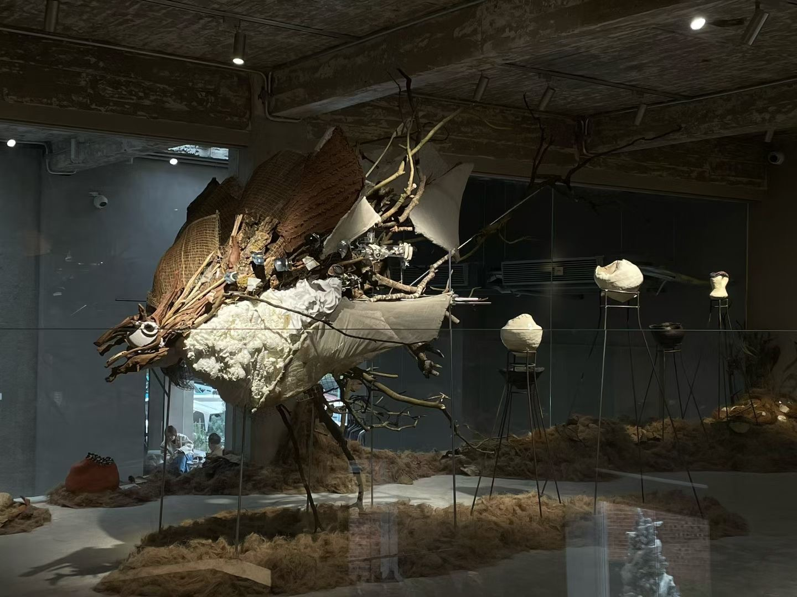
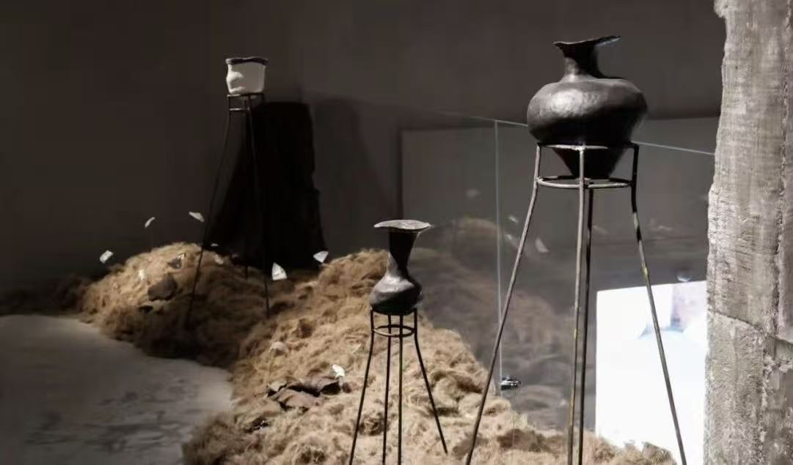
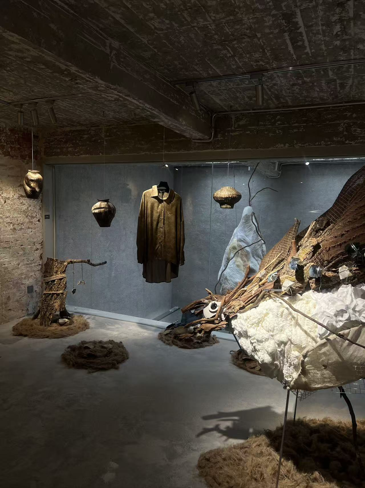
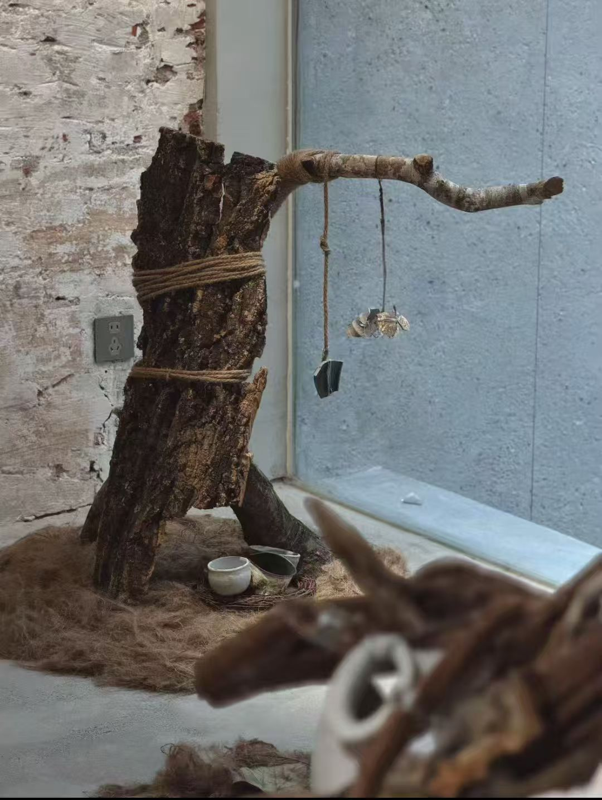

SPATIAL INSTALLATION
Sumeru
Between disorder and form.

ABOUT THE WORK
Sumeru explores the transformation from disorder to form through a hybrid spatial installation.
Drawing from aquatic, avian, and terrestrial forms, layered surfaces and tentacle-like extensions bring light, material, and movement into dialogue.


